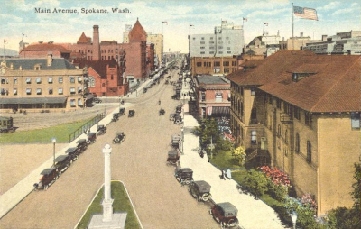

About Spokane
About Our City
The city of Spokane is in the heart of the Inland Northwest and has beautiful Riverfront Park in downtown Spokane. It is the second most populous city in Washington. Our area is home to numerous outdoor activities, such as the beautiful Centennial Trail, ski resorts, water rafting, camping areas, hiking trails, and lakes.
Population Demographics
- Median Resident Age: 35.25 Years
- Number of Households in Spokane in 2018: 89,626
- Average persons per household: 2.32
Information from my.spokanecity.org
Visit Manito Park!
Spokane has many beautiful parks including Manito Park, home to its share of gorgeous gardens.
The Duncan Garden is the most iconic of the gardens at Manito, with a beautiful fountain at its center and pleasing bilateral symmetry. It is a popular place for wedding ceremonies because of its natural beauty and photogenic backdrops.
1702 S Grand Blvd, Spokane, WA 99203
(509) 363-5455
Upcoming Events in Spokane County
The Great Outdoors Art Show
December 8 to December 26
Downtown Spokane
Historic Liberty Building
Corner of West Main & N. Washington St
Santa at North Town Mall
December 8 to December 24
Northtown
North Town Mall First Floor by Get Air
4750 n Division St
Phone: (509) 482-0209
WebsiteNorthwest Winterfest — Spokane Valley
December 8 to January 2, 2022
Spokane Valley
Spokane Fair & Expo Center
404 N Havana
Information from visitspokane.com
The History of Spokane
The history of Spokane, Washington in the northwestern United States developed because Spokane Falls and its surroundings were a gathering place for numerous cultures for thousands of years. The area's indigenous people settled there due to the fertile hunting grounds and abundance of salmon in the Spokane River. The first European to explore the Inland Northwest was Canadian explorer-geographer David Thompson, working as head of the North West Company's Columbia Department. At the nexus of the Little Spokane and the Spokane, Thompson's men built a new fur trading post, which is the first long-term European settlement in Washington state.
The first American settlers, squatters J.J. Downing, with his wife, stepdaughter, and S.R. Scranton, built a cabin and established a claim at Spokane Falls in 1871. James N. Glover and Jasper Matheney, two Oregonians passing through the region in 1873, recognized the value of the Spokane River and its falls. They realized the development potential and bought the claims of 160 acres (0.65 km2) and the sawmill from Downing and Scranton for $4,000 total. Glover and Matheney knew that the Northern Pacific Railroad Company had received a government charter to build a main line across this northern route. By 1881, the Northern Pacific Railway was completed, bringing major European settlement to the area. With the arrival of the Northern Pacific Railroad and the later additions to the city's railroad infrastructure by the arrival of the Union Pacific, Great Northern, and Chicago, Milwaukee, St. Paul and Pacific railroads, Spokane became the commercial center of the Inland Northwest. It was one of the most important rail centers in the western United States. Spokane hosted the first environmentally themed World's Fair in Expo '74, becoming the then-smallest city to ever host a World's Fair. With falling silver, timber, and farm prices, the city economy began a decline that would last into the 1990s. Spokane is still trying to make the transition to a more service-oriented economy. The opening of the River Park Square Mall in 1999 sparked a downtown rebirth that included the building of the Spokane Arena and expansion of the Spokane Convention Center.
This article uses material from the Wikipedia article "History of Spokane, Washington", which is released under the Creative Commons Attribution-Share-Alike License 3.0